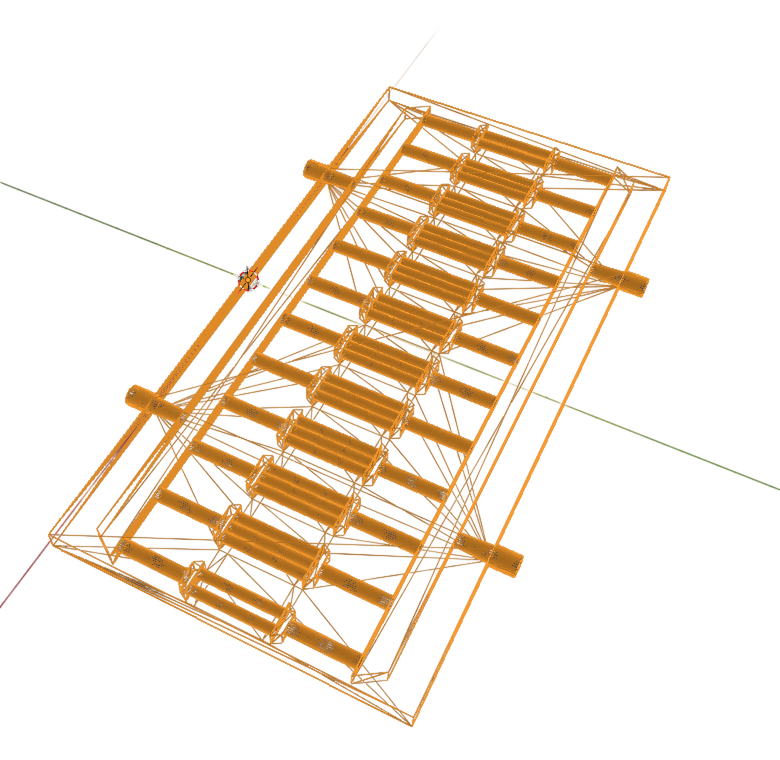
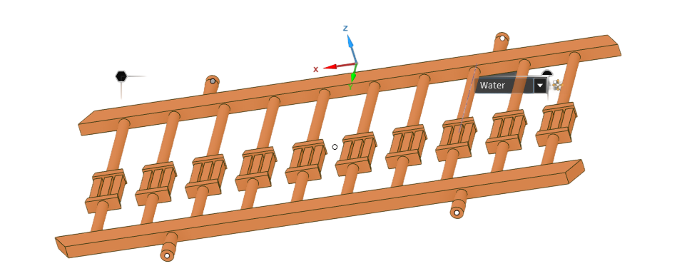
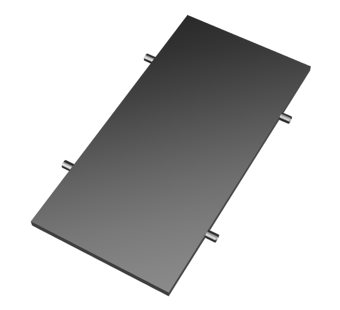
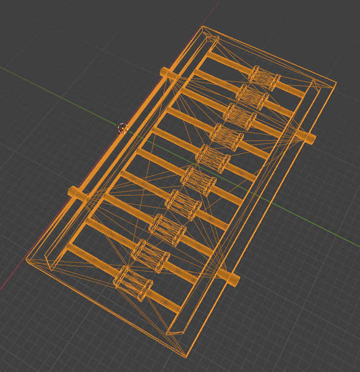
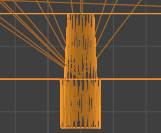
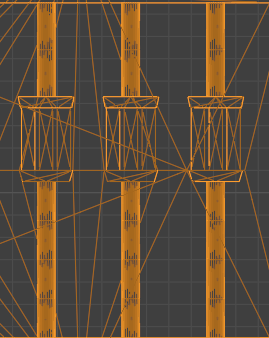

Equiflow.
Cooling by design.
Balance through flow.

A liquid cooling plate that connects broad cooling coverage with focused attention to battery hotspots.
- Discipline
- Design engineering
Thermal management - Scope
- Channel architecture · CAD
Coupled fluid–solid CFD - Design focus
- Coolant distribution
Temperature uniformity + pressure loss
01 / BRING THE ARCHITECTURE TOGETHER
Inside the
battery cooling plate.
Parallel channels, tapered manifolds and local microchannels balance broad coverage with hotspot cooling.


02 / DEFINE THE BALANCE
The trade-off:
cooling vs pressure loss.
Reduce hotspots and temperature variation without excessive flow resistance or pumping demand. Both affect battery performance and life.
Lower peaks.
More even temperatures.
Cover the contact area and target thermally critical regions.
Less resistance.
Balanced channel flow.
Balance channel flow while limiting pressure loss.
03 / FROM REQUIREMENTS TO CHANNELS
Three channel
design decisions.
Explore how the plate distributes coolant, covers the battery and targets hotspots.

Shorter paths.
Broader coverage.
Ten parallel channels cover the contact area. Shorter paths aim to limit coolant warming and resistance.
- Design decision
- Divide the cooling path into parallel branches.
- Intended benefit
- Reach more of the battery without relying on one long flow path.
Balance flow
before it branches.
Symmetric dual ports and tapered manifolds aim to equalise branch pressure and coolant distribution.

Geometry for more balanced distribution.
Focus cooling
where it matters.
Micro-manifolds feed local microchannels, increasing contact area where hotspots need more heat transfer.

More contact area at critical regions.
- Contextual research
- Problem definition
- Requirements
- Initial ideation
- Concept iterations
- CAD modelling
- Hand calculation
- CFD validation
04 / TEST THE DESIGN THROUGH CFD
CFD results
& remaining hotspots.
Coupled fluid–solid CFD evaluates temperature, heat removal and pressure loss under these inputs.
- Coolant
- Water
- Mass flow rate
- 10 g/s
- Inlet temperature
- 20°C
- Heat source
- 1.03 × 105 W/m³
Simulation results for this design under the inputs above. Cooling remains non-uniform; local hotspots and flow losses need refinement.
Follow the pressure
through the channels.
Reported pressure drop: 15.1 Pa. The contour scale shows local total pressure, not the overall drop.
Look beyond
one temperature.
The channel plot shows temperature variation with its original scale.
A peak value.
An uneven field.
Maximum temperature: 46.6°C. The 3D view shows remaining variation across the battery.
Hotspots remain
a design input.
The planar view locates hotspots for the next iteration.
05 / CLOSE THE LOOP, OPEN THE NEXT
Next: improve
temperature uniformity.
Refine local cooling and branch distribution, then rerun CFD to check hotspots and flow losses together.